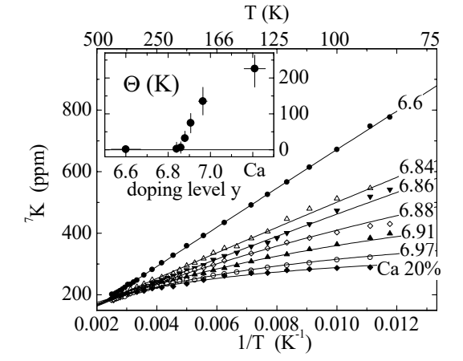

Impurity NMR experiment · Source 342
Spinless Impurities in High-Tc Cuprates - Kondo-Like Behavior
A spinless impurity can induce moments on neighboring Cu sites; their local susceptibility changes from nearly Curie-like to a screened, Kondo-like form with doping.
See → explain → test
A spinless defect reveals a correlated host
Picture 1 / 4
Put a spinless defect in the correlated plane
Look for: Find the missing site spin and the neighboring host response.
The induced moment belongs to the surrounding host sites, not to a hidden spin on the nominally spinless impurity.
Check the argument in the original: PDF pp. 1–2 ↗
Picture 2 / 4
Read the nucleus as a local sensor
Look for: Follow four neighboring Cu contributions toward the Li shift.
Transferred hyperfine couplings relate the local static response to a measured frequency shift; orbital/quadrupolar contributions need separation.
Check the argument in the original: PDF pp. 2–3 ↗
Picture 3 / 4
A scale bends a Curie response
Look for: Compare 1/T with 1/(T + Θ) above zero temperature.
Positive Θ suppresses the low-temperature upturn of the fit. Axes here are dimensionless teaching units, not a refit of the data.
Check the argument in the original: PDF pp. 3–4 ↗
Picture 4 / 4
Move from analogy to a test
Look for: Compare static-shift evidence with missing dynamical and transport tests.
“Kondo-like” is the source’s careful conclusion. Actual plane concentration also matters when comparing defect-induced Tc suppression.
Check the argument in the original: PDF pp. 3–4 ↗
Predict before revealing
What does a successful C/(T + Θ) fit to the local shift establish by itself?
Choose an answer, then compare the reasoning.
The fit characterizes the static local response. The host produces the moment near a spinless defect; independent dynamical and transport evidence is needed for a complete Kondo account.
Read the answer
A phenomenological local susceptibility scale. The fit characterizes the static local response. The host produces the moment near a spinless defect; independent dynamical and transport evidence is needed for a complete Kondo account.
Read the author figures · evidence and axes

Follow a curve versus 1/T and compare its departure from a straight line as doping changes. Then inspect Θ in the inset.
The lines are phenomenological fits; the oxygen/Ca labels are sample-specific tuning variables.
Open full source page ↗ · Click the figure to enlargeDetailed argument · from assumptions to conclusions
1 · Why compare Li and Zn?
Both substitutions are spinless closed-shell defects on a Cu site, but Li⁺ and Zn²⁺ have different valence. This separates, imperfectly, the magnetic disruption of the correlated host from the relative charge of the defect. A nonmagnetic atom does not guarantee a nonmagnetic neighborhood: removing a spin from an antiferromagnetically correlated network can leave an induced spin texture on surrounding Cu sites.
The experiment compares local ⁸⁹Y shifts for underdoped samples. The nearby-impurity satellite line acquires a strong Curie-like contribution while the main line probes more distant environments. The close Li/Zn resemblance suggests a common local perturbation. It argues against an extra Li-associated hole localized on nearest-neighbor oxygen orbitals in this metallic regime, where such a hole would strongly affect the yttrium response. This conclusion should not be extended unchanged to insulating Li-doped La₂CuO₄.
PDF pp. 1–2 ↗2 · Concentration is an experimental quantity
Nominal impurity concentration is not necessarily the fraction occupying plane Cu sites. The authors use satellite intensity and the ⁷Li signal to estimate actual plane occupation. In the dilute limit, the nearest-neighbor yttrium intensity scales with approximately four times the plane defect fraction. Relaxation, pulse response and signal normalization are practical concerns whenever intensities are used quantitatively; a resolved line alone is not a concentration measurement.
Once Tc is plotted against measured in-plane concentration, Li and Zn suppress superconductivity similarly within uncertainties. Near optimal doping the reported slopes are about 6 ± 1 and 7.1 ± 0.5 K per percent in-plane impurity. That comparison differs from one using nominal concentrations. The result supports the importance of the spinless perturbation in a correlated host; it does not demonstrate that every defect has the same scattering cross section in every family or doping regime.
PDF pp. 2–3 ↗3 · Why ⁷Li is an especially useful local probe
The impurity nucleus couples to its four neighboring Cu moments. The samples are powder crystallites aligned with their c axes in epoxy, and the NMR field is 7.5 T. ⁷Li has nuclear spin 3/2 and a quadrupolar splitting of roughly 40–57 kHz here. The central transition can be interpreted mainly as a magnetic shift because that splitting is small compared with the Larmor frequency. This does not mean that the electric field gradient vanishes.
The relation Kc = 4Ahf χ/(NAμB) converts the local shift into a susceptibility under the assumed equivalent-neighbor coupling. The factor four counts those neighbors. The estimated hyperfine coupling is nearly isotropic and model-dependent in magnitude. Yttrium nearest-neighbor satellites become difficult to separate near optimal doping, while Li remains a direct probe of the impurity neighborhood. Thus choosing the nucleus changes spatial selectivity as well as experimental convenience.
PDF pp. 2–3 ↗4 · Read the curvature in Figure 4
For underdoped samples the local susceptibility follows approximately C/T. At larger hole doping the shifts are fitted by C/(T + Θ). On a plot against 1/T the pure Curie response is straight, whereas a positive Θ introduces downward curvature. The inferred Θ rises strongly with doping, reaching about 226 K in the Ca-overdoped sample, while the amplitude C changes less dramatically. The x axis of the inset includes oxygen content and a Ca-substituted endpoint, so it is not a universal linear hole-density scale.
For the dilute concentrations studied below about two percent, Θ is largely concentration independent. This weakens an explanation based solely on interactions between moments surrounding different impurities. A screening or host-correlation scale is a plausible interpretation. The paper does not directly observe a universal zero-temperature saturation law: most relevant shift measurements occur above the superconducting transition and within a finite temperature range. An extrapolated fit must be distinguished from measured low-temperature behavior.
PDF pp. 3–4 ↗5 · What Kondo-like means, and what it does not establish
In the conventional Kondo problem a magnetic impurity couples to conduction electrons and its moment becomes screened below an emergent scale. Here the substituted atom is spinless and the host generates the moment. The resemblance is in the temperature dependence and growing characteristic scale. That is why the authors say Kondo-like: they explicitly request additional transport and other normal-state tests before deciding the full relevance of the analogy.
The persistence of an induced local response into overdoping shows that correlations remain significant around a defect. It does not exclude every interacting Fermi-liquid description merely because the host responds magnetically. Macroscopic susceptibility at much higher Zn concentration also contains concentration and subtraction complications. Finally, this is a static-shift paper: importing an unreported T₁ peak, a screening time or a relaxation mechanism would go beyond its data. Compare it with Moriya to distinguish local static susceptibility from momentum-weighted dynamical relaxation.
PDF p. 4 ↗Essential equations · symbols, meaning & units
χ is the molar susceptibility associated with an induced nearest-neighbor Cu moment in the source’s convention. Four equivalent Cu neighbors contribute; a different geometry requires a different coupling sum.
PDF p. 3 ↗C controls amplitude and Θ a fitted temperature scale. Positive Θ suppresses the Curie divergence of the fit; it does not alone establish all signatures of conventional Kondo physics.
PDF pp. 3–4 ↗Explain it in depth
How can a spinless impurity produce a magnetic NMR signal?
The induced moment belongs to nearby correlated host sites; the nucleus senses their transferred hyperfine field.
Why compare Tc against actual plane concentration?
Different site occupancies make nominal concentrations an unequal measure of the defects that perturb CuO₂ planes.
What would be needed beyond a C/(T+Θ) shift fit to establish a full Kondo scenario?
Independent dynamical and transport evidence, scale consistency, and a microscopic account of the host-generated moment and its screening.
Source coverage and version
All four supplied pages read in text; Figures 1–4 and hyperfine/Curie–Weiss notation visually checked. No nuclear T₁ measurement is reported in this paper. The authors explicitly call the Kondo analogy phenomenological.